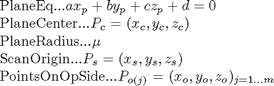

nbv_volume
Description: this function works out one scan at a given position, by; 1) first calculate an optimal scan (once) by using the scan range, pan bearing and scan tilt (6th joint assumed 0 so the robot can actual move with the second last joint so as to maximise the scan everytime) 2) then (and subsequent times as long as scan pan and tilt is not changed) it will shift this block of point scan to the desired position and desired bearing 3) then if there are any obsticles defined in the workspace it will work out the point to carve out these are the points obstructed because of the surface from the laser scan pos Note: setupworkspace (or something) to set workspace variables should have been run
Contents
- Function Call
- Variables
- Do the transformation shift and rotation of the points
- Temporary Display and plotting for error testing etc
- Remove points that are beyond osticle points
- Go through each obstacle where the home point is within the scan
- If points on other side of this plane, ray trace, check if intersec<mew
- FUNCTION: Basic scan
- Take the scan - work out end points
- Find cubes which are intersected with and fill them with a point
- FUNCTION: delete_scan_lines
Function Call
Inputs:
tr (4*4 double) transform in space position and orientation
newQ (1*6 double) the proposed newQ
Returns:
points (3*many double) point in space that will be seen at this tr
function points=nbv_volume(tr,newQ)
Variables
global scan workspace if ~isfield(scan,'basescan') scan.basescan=dobasic_scan(workspace.inc_size); save basic_scan_data.mat -struct scan basescan; end
Do the transformation shift and rotation of the points
%get the points from memory points=scan.basescan; %if we are using the square vectors where chosen pose goes to, else we have a legitimate tr passed in % Used for NBV only (leave here for now) if tr(2,1)==0&&tr(1,2)==0 && tr(3,1)==0&&tr(1,3)==0 && tr(2,3)==0&&tr(3,2)==0 if tr(1,1)<0 points=[-1*points(:,1),points(:,2:3)]; end %you could do for tr(2,2) but it would fip it and it issymetric around z %axis so the y doesn't effect it if tr(3,3)<0 points=[points(:,1:2),-1*points(:,3)]; end %now rotate around the y axis in direction clockwise if sign product is >0 or couterclockwise if sign product is <0 temp_tr=makehgtform('yrotate',-sign(tr(1,1)*tr(3,3)) * pi/4); points=points*temp_tr(1:3,1:3); else %For actual NBV_beta where tr is not perfect points=points*tr(1:3,1:3)'; end current_scan_origin=[tr(1,4),tr(2,4),tr(3,4)]; points=[points(:,1)+current_scan_origin(1),points(:,2)+current_scan_origin(2),points(:,3)+current_scan_origin(3)]; %put into the workspace inc size points=round(points/workspace.inc_size)*workspace.inc_size; % Remove points which are in the robot base position points=points((points(:,1)<workspace.robotsize(1,1)|points(:,1)>workspace.robotsize(1,2)|... points(:,2)<workspace.robotsize(2,1)|points(:,2)>workspace.robotsize(2,2)|... points(:,3)<workspace.robotsize(3,1)|points(:,3)>workspace.robotsize(3,2)),:); % works out how much of potential info is new and within boundaries points=points((points(:,1)>=workspace.min(1) & points(:,1)<=workspace.max(1) &... points(:,2)>=workspace.min(2) & points(:,2)<=workspace.max(2) &... points(:,3)>=workspace.min(3) & points(:,3)<=workspace.max(3)),:); %keep only unique points points=unique(points,'rows');
Temporary Display and plotting for error testing etc
% set the state of points before removing shadow plotting to show where % this view will go % figure(2) % temp1=plot3(tr(1,4),tr(2,4),tr(3,4),'r*'); % actual_targ=sum(unit(tr(1:3,1:3)),2)+tr(1:3,4); % hold on; % temp2=plot3(actual_targ(1),actual_targ(2),actual_targ(3),'b*'); % pause(1.5) % temp3=plot3(points(:,1),points(:,2),points(:,3),'g.'); % pause(1); % tr % delete(temp1);delete(temp2);delete(temp3);
Remove points that are beyond osticle points
%put workspace and robot obstructing planes together plane_homepnts=[workspace.robotplanes.home_points; workspace.indexedobsticles_home_point]; %put the equations of planes together plane_equ=[workspace.robotplanes.equ; workspace.indexedobsticles_equ]; %if any are the same then probably there is some obstruction by the planes plane_index=(1:size(plane_homepnts,1))';obstructingPNTS=1; % remove points which are obscured by surfaces %scanorigin % o------------- % \ Known % \ 0\ obsticle % \XX\ unknown since behind obsticle % \XXX\ % firstly remove all points that we either know are free or have an obstacle points=setdiff(points,[workspace.knowncoords;workspace.indexedobsticles],'rows'); %if we pass in the newQ then we can remove self scanning points if exist('newQ','var') points=remove_self_scanning(points,newQ); end %this is just here for displaying purposes points_before_remove_shadow=points;
Go through each obstacle where the home point is within the scan

if ~isempty(obstructingPNTS) % showld be the same as the surfaces made when we get obsticle points mew=workspace.mew; for i=plane_index' %what side are the points on of this plane? points_sign=(plane_equ(i,1)*points(:,1)+... plane_equ(i,2)*points(:,2)+... plane_equ(i,3)*points(:,3)+... ones([size(points,1),1])*plane_equ(i,4))>0; %what side is the scan.origin on? scan_origin_sign=(plane_equ(i,1)*current_scan_origin(1)+... plane_equ(i,2)*current_scan_origin(2)+... plane_equ(i,3)*current_scan_origin(3)+... plane_equ(i,4))>0; %All point on the same side are automatically valid %Now look at point on the opisite side of the plane points_on_oposite_side=points(points_sign~=scan_origin_sign,:);
If points on other side of this plane, ray trace, check if intersec<mew

if size(points_on_oposite_side,1)>0 %we get the r variables for the parametric forms of a line between 2 points r_var=[current_scan_origin(1)-points_on_oposite_side(:,1),... current_scan_origin(2)-points_on_oposite_side(:,2),... current_scan_origin(3)-points_on_oposite_side(:,3)]; %find intersection point between surface and the scan line between scan origin and point bottomof_t_var=plane_equ(i,1)*r_var(:,1)+... plane_equ(i,2)*r_var(:,2)+... plane_equ(i,3)*r_var(:,3); %make sure it is not 0 otherwise change it so it is simply a very small number (epsilon) so we can keep the size of matrixes if ~isempty(find(bottomof_t_var==0, 1)); bottomof_t_var(bottomof_t_var==0)=eps; end t_var=( plane_equ(i,1)*current_scan_origin(1)+... plane_equ(i,2)*current_scan_origin(2)+... plane_equ(i,3)*current_scan_origin(3)+... plane_equ(i,4)... )./ bottomof_t_var; % Get the intersection points intersectionPNTs=[t_var.*-r_var(:,1)+current_scan_origin(1),... t_var.*-r_var(:,2)+current_scan_origin(2),... t_var.*-r_var(:,3)+current_scan_origin(3)]; % figure(2);hold on;view(3) % a=plot3(temp_plane_homepnts(planes_of_interest(i),1),temp_plane_homepnts(planes_of_interest(i),2),temp_plane_homepnts(planes_of_interest(i),3),'r*'); % b=plot3(current_scan_origin(1),current_scan_origin(2),current_scan_origin(3),'black*'); % c=plot3(points_on_oposite_side(:,1),points_on_oposite_side(:,2),points_on_oposite_side(:,3),'y.'); % d=plot3(points(points_sign==scan_origin_sign,1),points(points_sign==scan_origin_sign,2),points(points_sign==scan_origin_sign,3),'g.'); % delete(a);delete(b);delete(c);delete(d); %find the points which are either on the same side of the plane as the scanning point %or they are on the other side and are less than mew fmro the intersection point points=[points(points_sign==scan_origin_sign,:);... points_on_oposite_side((sqrt((intersectionPNTs(:,1)-plane_homepnts(i,1)).^2+... (intersectionPNTs(:,2)-plane_homepnts(i,2)).^2+... (intersectionPNTs(:,3)-plane_homepnts(i,3)).^2)>mew),:)]; %it is possible that all points have been removed so we can break %out and say no points are give (if surface is right in front) if size(points,1)==0 break end end end end % % TESING purposes for showing the shadowing effect % display(strcat('Before shadow removal there were: ',num2str(size(points_before_remove_shadow,1)),... % ' points. Afterwards there were: ', num2str(size(points,1)),... % '. Hence reduced by:',num2str(size(points_before_remove_shadow,1)-size(points,1)))); % figure(2);global plane;plot_planes(plane,mew);plot3(current_scan_origin(1),current_scan_origin(2),current_scan_origin(3),'black*');hold on; % a=plot3(points_before_remove_shadow(:,1),points_before_remove_shadow(:,2),points_before_remove_shadow(:,3),'r.'); % hold on;b=plot3(points(:,1),points(:,2),points(:,3),'g.'); % c=setdiff(points_before_remove_shadow,points,'rows'); % hold on;d=plot3(c(:,1),c(:,2),c(:,3),'b.'); % hold on; e=plot3(current_scan_origin(1),current_scan_origin(2),current_scan_origin(3),'black+'); % delete(a); % delete(b); % delete(d); % delete(e);
FUNCTION: Basic scan
Description: this traces out the lines and gets a group of points as the basic scan
function points=dobasic_scan(cube_size) global scan workspace %starttime=clock; %this will actually be x or y axis from end effector but not sure which %have to find out which axis the 5th joint rotates around laser_pos=[0,0,0]; bear=[1,0,1]; %used to be [0,0,1] tilt_rotate_vec=[0,1,0]; %max range of laser las_range=scan.size; %Laser Angualar VARIABLES %this is the angle either side of the bearing of the center of the scan \|/ theta=scan.theta; %the increment angle used in both %theta_incr=scan.theta_incr; %this is the angle from the tilt, - is up, + is down, angle must be from -2pi to 2pi alpha=-scan.alpha; % %SETUP WORKSPACE %since we want to know what is the max angle we can use HERE only so that %at the furthest point we have resolution enough to cover our cubes at %least 3 times at the point of longest laser range, so we use that angular %resolution for this simulation theta_incr=atan((cube_size/3)/las_range); %we have an actual min resoltion in hardware so this is the minmum if theta_incr<scan.theta_incr theta_incr=scan.theta_incr; end
Take the scan - work out end points
This is the most important vector it describes the center of the first laser pan scan we will rotate to ge the pan scan
dir_vec=las_range*(bear); %this is the vector that we will pan rotate around, it is always at origin %so we get cross product of the two vectors on the plane to get normal %pan_rotate_vec=cross(dir_vec,tilt_rotate_vec); pan_rotate_vec=tilt_rotate_vec * [0 -dir_vec(3) dir_vec(2);... dir_vec(3) 0 -dir_vec(1);... -dir_vec(2) dir_vec(1) 0]; %this works out through pan rotation of the ice cream cone from the origin %work out how many increments based on lasers lowest steps increments=round(2*theta/theta_incr); single_pan=[]; for j=-theta:(2*theta)/(increments-1):theta single_pan=[single_pan;rot_vec(dir_vec,pan_rotate_vec,j)]; end current_row=1; ice_cream_bounds=zeros([increments^2,3]); %this tilt rotates and transforms to come form laser position for i=0:alpha/(increments-1):alpha tilt_rot_res=rot_vec(single_pan,tilt_rotate_vec,i); new_current_row=current_row+size(tilt_rot_res,1); ice_cream_bounds(current_row:new_current_row-1,:)=[tilt_rot_res(:,1)+laser_pos(1),... tilt_rot_res(:,2)+laser_pos(2),... tilt_rot_res(:,3)+laser_pos(3)]; current_row=new_current_row; end
Find cubes which are intersected with and fill them with a point
markedcubes=[]; dist=sqrt((laser_pos(1)-ice_cream_bounds(:,1)).^2+... (laser_pos(2)-ice_cream_bounds(:,2)).^2+... (laser_pos(3)-ice_cream_bounds(:,3)).^2); valid_rows=find(dist); tempstarter=(ice_cream_bounds(:,1)-laser_pos(1))./(2*dist(:)/cube_size); for i=[valid_rows]' %check each one of the segements for zero distance and fill with that planes value for inbetweens if laser_pos(1)==ice_cream_bounds(i,1) inbetweenpoint=[laser_pos(1)*ones([round((2*dist(i)/cube_size))+1,1])]; else %inbetweenpoint=[(laser_pos(1):(ice_cream_bounds(i,1)-laser_pos(1))/(2*dist(i)/cube_size):ice_cream_bounds(i,1))']; inbetweenpoint=[(laser_pos(1):tempstarter(i):ice_cream_bounds(i,1))']; end if laser_pos(2)==ice_cream_bounds(i,2) inbetweenpoint=[inbetweenpoint,(laser_pos(2)*ones([size(inbetweenpoint,1),1]))]; else inbetweenpoint=[inbetweenpoint,(laser_pos(2):(ice_cream_bounds(i,2)-laser_pos(2))/(size(inbetweenpoint,1)-1):ice_cream_bounds(i,2))']; end if laser_pos(3)==ice_cream_bounds(i,3) inbetweenpoint=[inbetweenpoint,(laser_pos(3)*ones([size(inbetweenpoint,1),1]))]; else inbetweenpoint=[inbetweenpoint,(laser_pos(3):(ice_cream_bounds(i,3)-laser_pos(3))/(size(inbetweenpoint,1)-1):ice_cream_bounds(i,3))']; end %end %workspace_origin cubes_checked=floor(inbetweenpoint/cube_size); %Note: since this may be rotated we don't want to delete potential %infomation (deleted the statement which did this %had to add this markedcubes=[markedcubes;cubes_checked]; %this balances out with the above adding rows to a matrix if rand>0.98 markedcubes=unique(markedcubes,'rows'); end % end end % final step of saving the unique points if size(markedcubes)>0 markedcubes=unique(markedcubes,'rows'); points=markedcubes.*cube_size; end %etime(clock,starttime) % %% Plot the ice cream on the pyrimid cone % %This works out the bounds of the pyramid (only needed for plotting) % pan_pos_max=rot_vec(dir_vec,pan_rotate_vec,theta)+laser_pos; % pan_neg_max=rot_vec(dir_vec,pan_rotate_vec,-theta)+laser_pos; % tilt_pos_max=rot_vec(pan_pos_max-laser_pos,tilt_rotate_vec,alpha)+laser_pos; % tilt_neg_max=rot_vec(pan_neg_max-laser_pos,tilt_rotate_vec,alpha)+laser_pos; % % hold on;axis equal; % scan_line_handles=[]; % for k=1:round(increments/10):increments % %col % col_lines=(k-1)*increments+(1:increments); % scan_line_handles=[scan_line_handles;... % plot3(ice_cream_bounds(col_lines,1),ice_cream_bounds(col_lines,2),ice_cream_bounds(col_lines,3));... % plot3([ice_cream_bounds(col_lines(1),1),laser_pos(1),ice_cream_bounds(col_lines(end),1)],... % [ice_cream_bounds(col_lines(1),2),laser_pos(2),ice_cream_bounds(col_lines(end),2)],... % [ice_cream_bounds(col_lines(1),3),laser_pos(3),ice_cream_bounds(col_lines(end),3)])]; % % %hor % row_lines=k:increments:size(ice_cream_bounds,1); % scan_line_handles=[scan_line_handles;... % plot3(ice_cream_bounds(row_lines,1),ice_cream_bounds(row_lines,2),ice_cream_bounds(row_lines,3));... % plot3([ice_cream_bounds(row_lines(1),1),laser_pos(1),ice_cream_bounds(row_lines(end),1)],... % [ice_cream_bounds(row_lines(1),2),laser_pos(2),ice_cream_bounds(row_lines(end),2)],... % [ice_cream_bounds(row_lines(1),3),laser_pos(3),ice_cream_bounds(row_lines(end),3)])]; % % end % % scan_point_handles=[]; % scan_point_handles=[scan_point_handles;... % plot3(laser_pos(1),laser_pos(2),laser_pos(3),'r*');... % plot3(dir_vec(1)+laser_pos(1),dir_vec(2)+laser_pos(2),dir_vec(3)+laser_pos(3),'y*');... % ... % plot3(pan_pos_max(1),pan_pos_max(2),pan_pos_max(3),'b*');... % plot3(pan_neg_max(1),pan_neg_max(2),pan_neg_max(3),'b*');... % plot3([laser_pos(1),pan_pos_max(1)],[laser_pos(2),pan_pos_max(2)],[laser_pos(3),pan_pos_max(3)]);... % plot3([laser_pos(1),pan_neg_max(1)],[laser_pos(2),pan_neg_max(2)],[laser_pos(3),pan_neg_max(3)]);... % ... % plot3(tilt_pos_max(1),tilt_pos_max(2),tilt_pos_max(3),'g*');... % plot3(tilt_neg_max(1),tilt_neg_max(2),tilt_neg_max(3),'g*');... % plot3([laser_pos(1),tilt_pos_max(1)],[laser_pos(2),tilt_pos_max(2)],[laser_pos(3),tilt_pos_max(3)]);... % plot3([laser_pos(1),tilt_neg_max(1)],[laser_pos(2),tilt_neg_max(2)],[laser_pos(3),tilt_neg_max(3)])]; % % xlabel('x - Pan around');ylabel('y - Tilt Around');zlabel('z - stream point');grid on;hold on; % % % %mark the point of the cube as the closest point in cube to workspace origin % if size(markedcubes)>0 % figure(2) % plot3(markedcubes(:,1)*cube_size,markedcubes(:,2)*cube_size,markedcubes(:,3)*cube_size,'r.'); % keyboard % end % % % Delete the scan handles % delete_scan_lines(scan_line_handles,scan_point_handles) % clear scan_line_handles scan_point_handles
FUNCTION: delete_scan_lines
%This cleans up the lines from a scan function delete_scan_lines(scan_line_handles,scan_point_handles) for i=1:size(scan_point_handles,1) delete(scan_point_handles(i)); end for i=1:size(scan_line_handles,1) delete(scan_line_handles(i)); end